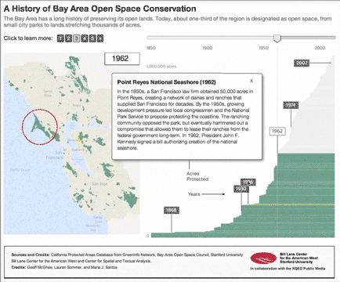

This website is no longer updated and has been replaced with a static copy. The Spatial History Project was active at Stanford University from 2007-2022, engaging in dozens of collaborative projects led by faculty, staff, graduate students, post-docs, visiting scholars and others at Stanford and beyond. More than 150 undergraduate students from more than a dozen disciplines contributed to these projects. In addition to a robust intellectual exchange built through these partnerships, research outputs included major monographs, edited volumes, journal articles, museum exhibitions, digital articles, robust websites, and dozens of lightweight interactive visualizations, mostly developed with Adobe Flash (now defunct). While most of those publications live on in other forms, the content exclusive to this website is preserved in good faith through this static version of the site. Flash-based content is partially available in emulated form using the Ruffle emulator.
A History of Bay Area Open Space Conservation

WARNING: This application is no longer available.
Authors
Geoff McGhee, Bill Lane Center for the American West (BLC)
Lauren Sommer, KQED
Maria J. Santos, BLC and Spatial History Project, CESTA
About this Visualization
Conservation efforts since the 19th Century have protected nearly a third of San Francisco Bay Area lands. In total, over a million acres have been designated as open space, ranging from small city parks to sprawling nature preserves.
This visualization recounts the progression of land conservation over 150 years in the nine counties that touch the San Francisco Bay and with the addition of Santa Cruz County, one of the focal regions in California where nature conservation came to fruition at an early and steady pace.
The interactive presents a series of five slides. Beginning with the full timeline of the current conservation network in the Bay Area, the user can explore each property’s basic characteristics and animate of the growth of the conservation network over time. The third slide highlights notable Bay Area properties like Golden Gate and Tilden parks and the Point Reyes National Seashore, and includes brief histories of how the properties came to be protected. The fourth slide explores the varying roles played by federal, state, county and local government organizations, and illustrates the growing involvement of nonprofits in conserving open space. Finally, the interactive highlights properties from the database that are still missing such important data points as their establishment date, sponsor, level of public access, and other items. Seeking to harness the knowledge of the general public, the interface invites users to help fill in missing information through links to a crowdsourcing platform developed with the GreenInfo Network. There users can suggest additions or edits to the data set.
What do we learn from this visualization?
The visualization shows several things. First there is quite a bit of spatial scattering of conservation action in the Bay Area over time -- no one single location or county got all the conservation attention at any time period.
Second it can be observed that large properties are added to the conservation network at different points in time. This is different from the state’s overall trend that showed that larger properties were conserved much earlier in time when they were more available. See for example Point Reyes National Seashore, a 54,000 acre property that was added to the conservation portfolio in 1962. Or the Knoxville Wildlife Management Area with about 20,000 acres and was added in 2000.
Third, conservation for specific purposes (e.g. Redwood forests or water resources) was very important early in the timeline. See for example the Big Basin Redwoods State Park and the San Francisco Watershed lands in the south Peninsula, and the Marin Municipal watershed District in the northern Peninsula. Later conservation efforts were different because they were more targeted, that is that they focused on underrepresented landcover types in the conservation portfolio. They also expanded beyond natural landscapes to working or cultural landscapes, such as agricultural lands and ranchlands respectively.
Finally it can be observed that this long process of land acquisition was not possible without a wide array of managers that ranges from cities to Federal agencies like the National Park Service. Slide four allows users to explore which properties are managed by which groups.
Data Notes
To date we have information on Open Space acquisition dates for 90% of the area of The San Francisco Bay Area that is considered Open Space. In the interest of preserving legibility, the visualization does not include the complete Bay Area data set, which features approximately 3500 records. Instead, it shows only the 648 properties with a minimum size of 100 acres. These collectively total 1.1 million acres out of the 1.1mi acres in the entire database. The additional properties that are not shown largely comprise small city parks and total about 10% of the total conservation area.
Acknowledgements
Bay Area Protected Areas database was put together by GreenInfo Network. GreenInfo Network also provided the platform for the crowdsourcing experiment. We are deeply thankful to all the agency managers that kindly answered our requests for data. This visualization was developed in collaboration with KQED (https://www.kqed.org/science/7757/warming-climate-could-transform-bay-area-parks-and-open-space).
RELATED VISUALIZATIONS:

A History of Conservation Land Acquisition in California
RELATED PUBLICATIONS: